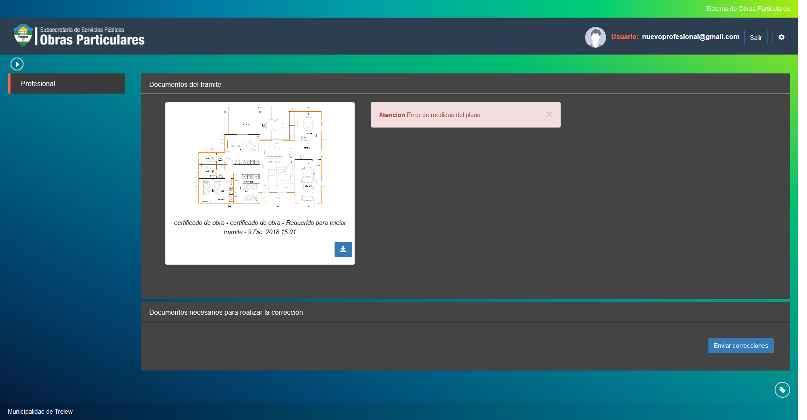

Corregir tramite¶
Esta opcion permite realizar la correccion de tramites que hayan sido devueltos por error en los documentos ingresados. Las opciones de visualizacion son las siguientes:
- Nro: Indica el numero del tramite a agendar.
- Domicilio: Indica el domicilio ocupado por la nueva obra.
- Propietario: Indica el propietario del tramite.
- Estado: Indica el estado actual del tramite. Es importante visualizar en el estado desde donde provienen las correcciones siendo posibles los siguientes origenes:
- ConCorreccionesDeVisado
- ConCorreccionesDeInspeccion
- ConCorreccionesDeInspeccionFinal
- ConCorreccionesDePrimerInspeccion
- ConCorreccionesRealizadas
- Superficie: Indica la superficie ocupada por la obra en curso.
- Tipo: Indica el tipo del tramite.
Para visualizar las correcciones pendientes del tramite debera hacer click en la opcion Ver y se mostrara una pantalla indicando las correcciones enviadas y una indicacion del error encontrado. Una vez corregidos los errores debera adjuntar la nueva documentacion y hacer click en el boton Enviar Correcciones.
